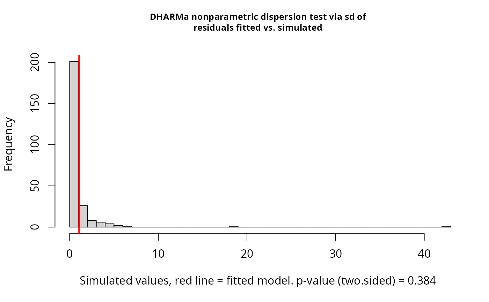

Fits the Chapter 11 blocked-design count-data models from Section 11.4: a naive Poisson GLMM, a Poisson-normal GLMM with a block-by-treatment unit effect, and a negative-binomial GLMM.
Details
The naive Poisson model is $$\log(\lambda_{ij}) = \eta + \tau_i + r_j,\quad r_j \sim N(0,\sigma_R^2).$$ The Poisson-normal model adds a unit term $$\log(\lambda_{ij}) = \eta + \tau_i + r_j + (rt)_{ij}.$$ The negative-binomial model omits the unit term and uses the distributional scale parameter to account for unit-level overdispersion.
Note
glmmTMB uses the nbinom2 parameterization
\(Var(Y) = \mu + \mu^2/\theta\). The book's negative-binomial scale
\(\phi\) corresponds approximately to \(1/\theta\).
References
Stroup, W. W., Ptukhina, M., and Garai, S. (2024). Generalized Linear Mixed Models: Modern Concepts, Methods and Applications, 2nd ed. CRC Press.
Examples
data(DataSet11.3)
if (requireNamespace("lme4", quietly = TRUE)) {
fit_naive <- lme4::glmer(
count ~ trt + (1 | block),
family = stats::poisson(link = "log"),
data = DataSet11.3,
nAGQ = 1,
control = lme4::glmerControl(optimizer = "bobyqa")
)
pearson_df <- sum(stats::residuals(fit_naive, type = "pearson")^2) /
stats::df.residual(fit_naive)
pearson_df
emmeans::emmeans(fit_naive, specs = ~ trt, type = "response")
fit_pois_normal <- lme4::glmer(
count ~ trt + (1 | block) + (1 | block:trt),
family = stats::poisson(link = "log"),
data = DataSet11.3,
nAGQ = 0,
control = lme4::glmerControl(optimizer = "bobyqa")
)
lme4::VarCorr(fit_pois_normal)
emmeans::emmeans(fit_pois_normal, specs = ~ trt, type = "response")
}
#> trt rate SE df asymp.LCL asymp.UCL
#> 1 6.02 2.48 Inf 2.68 13.5
#> 2 6.55 2.70 Inf 2.91 14.7
#> 3 9.47 3.88 Inf 4.24 21.1
#>
#> Confidence level used: 0.95
#> Intervals are back-transformed from the log scale
if (requireNamespace("glmmTMB", quietly = TRUE)) {
fit_nb <- glmmTMB::glmmTMB(
count ~ trt + (1 | block),
family = glmmTMB::nbinom2(link = "log"),
data = DataSet11.3
)
summary(fit_nb)
emmeans::emmeans(fit_nb, specs = ~ trt, type = "response")
if (requireNamespace("DHARMa", quietly = TRUE)) {
sim_res <- DHARMa::simulateResiduals(fit_nb, plot = FALSE)
DHARMa::testDispersion(sim_res)
}
if (requireNamespace("report", quietly = TRUE)) {
report::report(fit_nb)
}
}

#> We fitted a negative-binomial mixed model (estimated using ML and nlminb
#> optimizer) to predict count with trt (formula: count ~ trt). The model included
#> block as random effect (formula: ~1 | block). The model's total explanatory
#> power is substantial (conditional R2 = 0.62) and the part related to the fixed
#> effects alone (marginal R2) is of 0.05. The model's intercept, corresponding to
#> trt = 1, is at 1.90 (95% CI [1.07, 2.73], p < .001). Within this model:
#>
#> - The effect of trt [2] is statistically non-significant and positive (beta =
#> 0.30, 95% CI [-0.55, 1.14], p = 0.495)
#> - The effect of trt [3] is statistically non-significant and positive (beta =
#> 0.68, 95% CI [-0.17, 1.52], p = 0.116)
#>
#> Standardized parameters were obtained by fitting the model on a standardized
#> version of the dataset. 95% Confidence Intervals (CIs) and p-values were
#> computed using a Wald z-distribution approximation.